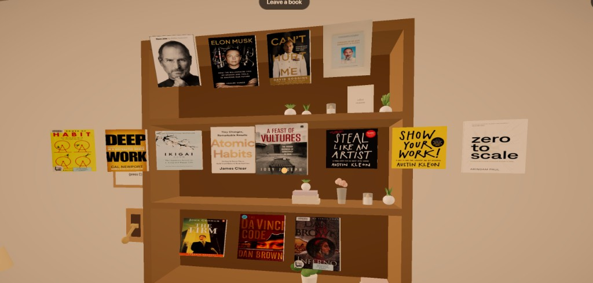

Press C, or use the lever by the bookcase, and every finished book lifts off the shelf. Cover mode used to show six. The rest were hidden behind those six.

They hang in rows by kind:
The stack sits low enough that the top row stays in view.
The middle books leave first, then the ones at the ends. Look at a cover and it leans toward you. Click, and it steps forward. It does not spin. Books on the reading table stay flat.
The sign by the lever says: Float the books / to view / (press C).
Pull a book out and a card opens with the title and author. It used to sit in the middle and hide the covers. It now sits at the lower right.
The title is a link to Open Library. On a desktop, press Esc first. That unlocks the mouse and leaves the card open, so you can click the title.